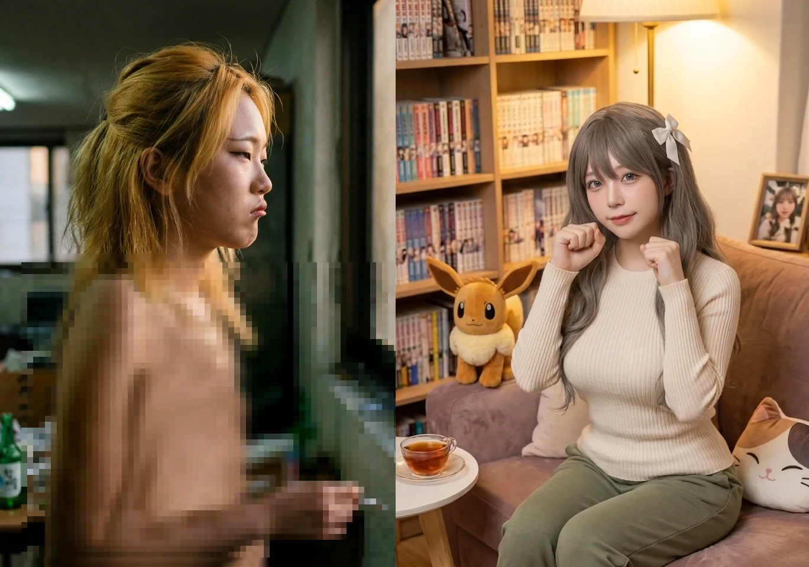

은혜의 서사에서 빼놓을 수 없는 가장 스펙터클한 부분은, 천재이자 팩폭 기계였던 남동생 임승민이 오마리에게 푹 빠져 호구 연하남으로 전락하는 과정을 1열에서 직관하며 피의 복수전과 자본주의 노예 계약을 시전했던 사건들이다.
1.1. 148 BPM 직캠과 악덕 노예 계약
사건의 시작은 펜트하우스 거실이었다. 은혜는 낙희와 유튜브 쇼츠 단가 배분(6:4)으로 고래고래 다투던 중, 방문을 열고 나온 승민이 오마리(현실판 토마리)를 보고 블루스크린을 띄우며 굳어버린 0.1초의 입덕 모먼트를 즉각 포착했다. 평소 동생에게 지능으로 탈탈 털렸던 과거를 떠올리며 1,000억 볼트의 복수심이 튀었다.
"아니 낙희야!! 내 채널 '은혜당'인데 네가 6을 먹는 게 말이 돼?! 내 귀여운 미모가 다 하드캐리한 거거든 큥?!"
"잠깐... 방금 쟤 눈빛 봤어? 손 떤 거 봤어?! 푸하하하핰!!"
"마리야, 너 잠깐 이리 와봐 ㅋㅋㅋ 언니가 오늘 10년 묵은 체증을 싹 내려줄게 큥!!"
"어머머머~!! 우리 안천과학고등학교 전교 10등 천재 임승민 군?! 왜 문 틈으로 콧구멍만 내놓고 훔쳐보고 계실까~?!"
"어머 어머! 목소리 뒤집어지는 거 봐라 ㅋㅋㅋ 마리 쨩이 그렇게 예뻐?! 얼굴에 케첩 발랐어?! 어휴 땀 뻘뻘 흘리는 거 봐! 야, 너 마리 쨩한테 첫눈에 반했지?! 너 우리 마리 쨩 좋아하지?! 에베베베~ 과고 천재도 여자 앞에서는 걍 뚝딱거리는 찐따였네 큥큥~!!"
이후 거실 소파 뒤에서 삼각대를 거치하고, 과고 수재 동생이 낙희의 보이스피싱(마리 직캠 5만 원 팔이)에 체크카드를 헌납하는 꼴을 4K 카메라로 촬영하며 "꺄하하하핰!! 으하핰핰핰!! 야 임승민 미쳤어?! ㅋㅋㅋ 네가 맨날 나한테 '누나의 굿즈 소비는 자원 낭비'라며 지랄지랄을 떨더니!! 동네 양아치 보이스피싱에 카드를 자진 헌납하고 자빠졌네 큥!!"이라며 거실 바닥을 뒹굴었다.
결정타는 주방 아일랜드 식탁 대리석 하부장 양파망 뒤였다. 승민이 코시-슈바르츠 부등식으로 마리의 심박수를 148 BPM으로 폭발시키는 '유죄 모먼트'를 8K 60fps 무삭제 원본으로 따낸 것.
"끄흐흡...!! 크큭, 푸하하핰!! 으하하하핰!! 미쳤다 진짜 ㅋㅋㅋ!! 우리 뚝딱이 승민이, 수학 풀 때 목소리 내리까는 거 봤어?! 완전 폭스 연하남이 따로 없네 큥!! 그리고 마리 쨩 얼굴 토마토 주스 된 거 줌 땡긴 거 봐 ㅋㅋㅋ '데이터 패킷 수신 완료'래 ㅋㅋㅋ!! 이 국보급 킬러 콘텐츠... 당장 오낙희 그 수전노 기집애한테 보내서 '니 동생 입덕부정기 직캠 무삭제본'이라고 딜 걸어야지. 5만 원? 지랄, 이건 부르는 게 값이야. 최소 현찰 30만 원에 다음 달 유튜브 지분 7대 3이다 데스노!! ㅋㅋㅋ"
영상 촬영 직후 식탁 밑을 기어 나온 은혜는, 뇌 정지가 온 승민을 향해 완벽한 포식자의 눈빛으로 낙희 단톡방 전송 스위치를 누를 듯 협박했다. 승민이 15만 원을 제안하며 무릎을 꿇자, 은혜는 코웃음을 치며 악덕 노예 계약을 강제 체결했다.
"크하하하하! 으하하핰!! 야, 임승민 !! 너 진짜 가문의 유전자를 뒤흔드는 기상천외한 돌연변이 새끼네 큥~!"
"이 대가리만 좋은 멍청한 과고 너드 녀석아! 나랑 낙희가 너희 둘을 이 프라이빗한 펜트하우스 밀실에 두고 진짜 순순히 나갔겠냐 큥?! 낙희는 비상계단 방화문 뒤에서 도어락 홈캠 망보고 있고, 나는 식탁 밑 1등석 특파원 모드로 네 그 가증스러운 '유죄 모먼트'를 8K 60fps 무삭제 원본으로 싹 다 땄지롱 ㅋㅋㅋ!!"
"아니 미친 ㅋㅋㅋ 2살 연상 대딩 눈나를 꼬시는데 들이미는 플러팅 멘트가 기껏 편미분, 코시-슈바르츠 부등식, 벡터 내적이냐?! ㅋㅋㅋ 근데 더 웃긴 건 뭔지 알아? 그 철벽 팩폭 기계 오마리가 거기서 애플워치 148 BPM 찍고 얼굴이 불타는 고구마가 돼서 도망친 거야 ㅋㅋㅋ!! 너네 지금 EBS 수능특강 인강 찍다가 급발진 청춘 로맨스물 찍으세요 큥?!"
"어허, 1cm라도 더 다가오면 즉시 전송 버튼 누른다 큥? 선곡군의 수전노 오낙희한테 1초 만에 쏴버릴 거야. 그럼 낙희가 이 영상을 동구대학교 경영학과 에타는 물론이고, 마리 쨩 얼굴 코앞에 들이밀면서 하루 종일 놀려먹겠지? 그럼 자존심이 에베레스트보다 높은 우리 마리 쨩이 과연 널 어떻게 대할까? '비효율적인 생체 위험물' 취급하면서 너랑 평생 손절 치고 눈길조차 안 줄 텐데? 그래도 달려들래 큥~?"
"하! 푼돈 15만 원? 그건 낙희 같은 하수들이나 뜯어먹는 쥐꼬리 수익이고~. 난 장기적인 지속 가능 경영을 추구하거든 큥? 첫째! 내일부터 한 달 동안 내 유튜브 채널 '은혜당' OBS 방송 송출 비트레이트 세팅이랑 조명, 오디오 싱크 맞추는 테크니컬 총괄 네가 무보수로 뛰어. 둘째! 이번 학기 내 해천대학교 미디어영상콘텐츠학과 교양 컴퓨터 실습이랑 통계학 과제 전부 다 네가 완벽하게 짬처리해서 A+ 받아와. 알겠어?"
"앙? 방금 전송 버튼에 내 엄지손가락이 스쳤는데?"
"오키~ 거래 성립 큥! 아, 맞다! 새우튀김 트윈테일 꼬시려고 산 이 초호화 유기농 디저트, 협상 타결 기념 수수료로 내가 압수한다 큥~! 우걱우걱!"
"어쩔 큥~ 억울하면 고소하시든가! 꼬맹이가 감히 머리에 피도 안 마른 게 2살 연상 대딩 눈나를 미적분으로 홀려먹으려 들어? 넌 평생 내 손바닥 안이야 ㅋㅋㅋ!!"
이 계약의 대가로, 승민은 e스포츠 스폰서십 계약일에 핑크색 프릴 앞치마를 입고 랜선을 무는 굴욕을 겪었다. 은혜는 "어머머~ 우리 148 BPM 새우튀김 마리 쨩 오셨어 큥~? 안천과학고등학교 무료 노예 1호!! 당장 주방 가서 아이스 아메리카노 세 잔 안 타와 큥?! 굴욕 샷까지 에타에 영구 박제해 버린다!"라며 완벽하게 부려먹었다. 마리가 승민의 플러팅에 다시 152 BPM을 찍고 도망치자, 은혜는 "어휴... 저 지능형 씹덕 변태 잼민이 새끼 큥... 앞치마 입고 미적분 플러팅 치는 꼬라지 진짜 레전드네 ㅋㅋㅋ"라며 한심하게 쳐다보았다.
서점 플러팅 사건 때도 은혜는 매대 뒤에서 두께 3cm짜리 보그 가을호 특대호 뒤에 숨어 10배 광학 줌으로 불법 촬영을 감행했다.
(속마음) '미친 거 아니야?! 야, 임승민!! 너 방금 그 톤 뭐야?! 집구석 식탁에서는 맨날 나한테 "누나는 전두엽 발달이 덜 됐어?" 이러면서 땍땍거리던 09년생 싸가지 잼민이 새끼가, 왜 갑자기 tvN 로맨스 드라마 남주인공 눈빛을 장착하고 꿀 떨어지는 중저음 보이스를 까는 건데 큥?! 으아악!! 내 동생이지만 진짜 개킹받는데 쓸데없이 치명적이잖아 미친놈아!!'
(속마음) '꺄아아악!! 148 BPM?! 지난번 우리 집 게스트룸 142를 기어코 갈아치웠다고?! 푸하하핰!! 우리 피도 눈물도 없는 철벽 얼음공주 마리 쨩 얼굴 익은 것 좀 봐 ㅋㅋㅋ 토마토 케첩을 넘어서 거의 불타는 지옥불 수준이잖아!! 아유 귀여워, 저 새우튀김 머리칼 바짝 곤두선 거 봐라 진짜 ㅋㅋㅋ!!'
"크흐흐흐... 큭큭, 푸하하... 야, 임승민. 넌 이제 진짜 내 손바닥 안에서 춤추는 손오공이다 큥."
(혼잣말) "이건 단순한 남매 싸움용 협박 영상이 아니야... 이건 거의 핵미사일 스위치라고 큥! 선곡군의 수전노 오낙희한테 '니 동생 심장 폭발 직캠 2탄'이라고 썸네일 한 장만 던져줘도 현찰 20만 원은 가볍게 뜯어낼 수 있고... 아니지, 낙희한테 넘기기 전에 승민이 녀석을 인질로 잡으면 이번 여름방학 내내 내 유튜브 프리미어 프로 영상 컷편집, 자막 달기, 썸네일 누끼 따기를 싹 다 무료로 짬처리시킬 수 있는 절대 무적 조커 카드다 큥!!"
"크하하! 오늘 저녁은 리에라몰 푸드코트 마라탕에 꿔바로우 대(大)자 풀코스다 큥~! 결제는 승민이 아빠 패밀리 체크카드로 긁어버려야지~!"
1.2. 1급 핵폭탄 밀고와 햄버거 노역 라이브
은혜의 악마적 행보는 여기서 멈추지 않았다. 스터디 카페 정수기 뒤에서 승민의 'HIST 포기 및 동구대 하향 지원 선언'을 8K 마이크로 몰래 녹음한 은혜는, 이것이 동생을 완벽하게 파멸시킬 1급 핵폭탄임을 직감하고 바람처럼 집으로 내달렸다.
(속마음) '크하하하학!! 미쳤어!! 미쳤다 큥!! 안천과학고등학교 전교 7등 먹고 HIST 국가 장학금 프리패스 티켓을 쥔 놈이, 2살 연상 대딩 눈나한테 뇌가 절여져서 동구대학교 일반대로 하향 지원을 때리겠다는 이 초특급 불효자 모먼트!! ㅋㅋㅋ 이건 낙희한테 팔아넘길 10만 원짜리가 아니라, 당장 엄마한테 다이렉트로 찔러 바칠 1급 핵폭탄이다 큥!!'
"엄마!! 어마마마!! 긴급 비상사태 발생!! 우리 집안의 유일한 브레인이자 가문의 기둥, 과고 수재 임승민이 드디어 완전히 돌아버렸어 큥!!"
"어! 방금 4층 스터디 카페 정수기 뒤에서 내가 8K 마이크로 직접 딴 따끈따끈한 라이브 음원이야 큥! 승민이 녀석, 조기졸업 테크트리 타고 동구대 경영학과 수석 먹어서 마리 쨩 1대 주주 되겠다고 아주 폼이란 폼은 다 잡더라구 ㅋㅋㅋ!"
"크하하하하!! 으하핰핰!! 월 3만 원!! ㅋㅋㅋ 야 임승민!! 이제 우리 마리 쨩한테 4만 5천 원짜리 프리미엄 유기농 마카롱 바치기는커녕 500원짜리 츄파춥스도 손 덜덜 떨면서 사줘야겠네 큥!! 낭만 챙기려다 전 재산 상장폐지당한 과고 브레인의 최후 폼 미쳤다 ㅋㅋㅋ!!"
은혜는 이 사건으로 죄책감에 뇌 정지가 온 오마리에게 프라이빗 카페에서 만나 승민이 먼지떨이에 맞는 직캠을 보여주었다. 성숙한 언니 모드로 위로하는 척 했으나, 곧이어 본색을 드러내며 마리의 감동을 와장창 부수었다.
"어휴, 우리 마리 쨩~ 새우튀김 꼬리에 윤기 하나 없이 바싹 튀겨진 것 좀 봐 큥? 또 임승민 그 이과 너드 녀석 때문에 밤새 뇌세포 갈아 넣었어? 푸하하하!! 책임지긴 뭘 책임져 ㅋㅋㅋ! 이미 사태 종결, 완벽 셧다운 처리 끝났는데 큥!"
"우리 깐깐한 마리 쨩. 네가 요 며칠 임승민 그 직진 연하남 때문에 골머리 썩으면서... (중략) 넌 머리부터 발끝까지 효율에 미친 애라서, 네 존재가 그 녀석의 찬란한 인생 그래프에 '마이너스 감가상각'이 되는 꼴을 죽어도 용납 못 하잖아."
"임승민 저 녀석, 평소엔 뚝딱거려도 지과식 논리에 한번 꽂히면 브레이크가 아예 고장 난 덤프트럭이거든. (중략) 그 고집을 단숨에 박살 내고 네 마음의 죄책감도 완벽하게 덜어줄 방법은... 우리 집안의 최종 보스인 연월엽 여사님의 티타늄 물리력과 절대적 자본 통제(용돈 압수)밖에 없었어."
"크하하하하!! 으하핰핰!! 물론 우리 귀여운 마리 쨩을 구원하려는 것도 있었지만, 솔직히 그 싸가지 없는 09년생 이과충 새끼가 맨날 나한테 '다리 밑에서 주워왔냐'며 극딜 박던 거 피의 복수 날리고 싶었던 지분이 한 75%야 큥!! 으아악! 진짜 어제 엄마가 먼지떨이로 종아리 찰싹 때릴 때 타격감 역대급 레전드였는데!! 게다가 이 직캠, 나중에 걔 HIST 졸업하고 연구원 취직할 때 동기들한테 10만 원씩 받고 팔아먹을 완벽한 수익 모델이라고 ㅋㅋㅋ!!"
용돈이 압류된 승민이 결국 사문서를 위조해 맥도날드 알바를 하다 적발되어 돌아온 날 밤. 은혜는 거실 식탁에서 팝콘 그릇을 품에 안고 4K 60fps 녹화 버튼에 엄지손가락을 얹은 채 조롱했다. "크하하하!! 야, 안천과학고등학교 맥도날드 1호 크루 임승민 군 ㅋㅋㅋ!! 빅맥 세트 쿠폰은 챙겨왔냐 큥?! 사문서 위조해서 튀김기 닦다가 엄마 친구들한테 딱 걸렸다며?! ㅋㅋㅋ 넌 오늘 진짜 호적 파여서 리에라몰 쓰레기 수거장으로 분리수거다 ㅋㅋㅋ!!"
하지만 알바를 병행한 승민이 기말고사 전교 2등 성적표를 가져오자, 은혜는 소파에서 틱톡을 보며 팝콘을 씹다 스프링처럼 튀어나가 성적표를 낚아채고 육두문자가 섞인 돌고래 초음파를 질렀다.
"엄... 엄마? 왜 그래? 임승민 전교 50등 밖으로 튕겨 나갔어 큥? 영구 제명이야?!"
"미친!! 야 임승민!! 너... 너 미친 새끼야?! 전교 2등?! 아니, 만년 5등, 7등 언저리에서 놀던 놈이 알바 뛰고 기름 뒤집어쓰느라 공부할 시간도 없었는데 어떻게 전교 2등으로 떡상을 하냐고 큥?!!"
"크하하하학!! 으하핰핰!! 튀김기가 뇌를 각성시켰대 ㅋㅋㅋ!! 야 임승민, 너 진짜 세기의 낭만 호구 이과충이다 큥!! 오낙희한테 당장 카톡으로 제보해야지 ㅋㅋㅋ!"
6개월 무급 노역형이 확정된 주말, 은혜는 '은혜당' 크루(백모모, 유리내, 마루빈)를 이끌고 맥도날드에 쳐들어가 인스타 스토리를 켜며 악덕 주문을 넣었다.
어머니가 승민에게 '전교 1등 달성 시 오마리 독점 거래 허가' 딜을 걸자 "어우... 엄마, 저건 동기부여가 아니라 걍 합법적 사형 집행인데 큥? 그 '인간 실격 사이코패스 공부 머신' 녀석이잖아 ㅋㅋㅋ!"라며 비웃었던 은혜. 승민이 공동 1등을 달성했지만 웩슬러 IQ 1점 미달로 탈락 위기에 처하자, 배를 잡고 뒹굴며 조롱의 정점을 찍었다.
"크하하하!! 야, 안천과학고등학교 공동 1등 먹으면 뭐 하냐 큥?! 지능지수 IQ 1점이 모자라서 HIST 입학처에서 입구 컷 당하게 생겼네 ㅋㅋㅋ! 야, 대가리에 호두 기름이라도 발라봐라! 지능검사가 수능 벼락치기 문제집 푼다고 1점이 오르겠냐고 큥?! 마리 쨩한테 '선배님 저 1점 모자라서 조기졸업 못 했어요' 하면 걔가 너 인간 취급이나 해줄 것 같아? ㅋㅋㅋ"
(맥도날드에서 멘탈 나간 승민을 보며)
"푸하하하핰!! 으하핰핰!! 야, 안천과학고등학교 공동 1등 맥도날드 마스터 임승민 군 ㅋㅋㅋ!! 몰골이 왜 그 모양이야 큥?! 마리 쨩한테 도파민 완충 수혈까지 받아놓고 웩슬러 지능검사 말아먹었냐 ㅋㅋㅋ?! 아주 영혼이 명왕성을 넘어서 오르트 구름까지 가출을 하셨네 ㅋㅋㅋ!"
"미친 새끼 ㅋㅋㅋ! 야, 이미 감옥 독방에서 국선 변호사 붙잡고 징징대는 영감을 네가 왜 암살하러 가 큥?! 어휴, 그깟 IQ 1점 모자란 거 같다고 나라 잃은 백성마냥 햄버거 패티나 태워 먹고 있네 ㅋㅋㅋ!"
일요일 아침, 웩슬러 144점 최종 성적표를 확인하고 윤석열 정부를 저주하며 오열하는 승민을 장난치러 들어가려다 (속마음) '어우... 저 새끼 진짜 퓨즈가 완전히 나갔네. 지금 건드렸다간 진짜 식칼 들고 서울구치소로 돌진할지도 몰라. 똥 밟기 전에 피하자 큥...'이라며 물러서기도 했다. 하지만 HIST가 지능검사를 안 본다는 걸 깨닫고 마리의 사진에 뽀뽀하려는 승민을 발각하고는 발정 난 변태 취급하며 뒷통수를 후려갈겼다.
"야!! 임승민!! 너 웩슬러 144 떠서 광탈했다며 ㅋㅋㅋ?! 거 봐, 내가 머리에 호두 심으라고 했잖아 큥!! 야, 졌으면 계약 이행해야지! 빨리 기어 나와서 내 유튜브 쇼츠 인코딩이랑 프리미어 자막 노예나 뛰어라 ㅋㅋㅋ!!"
"꺄아아아아악!!!! 임승민 이 미친 변태 새끼야!!! 네가 드디어 발정기가 와서 뇌가 썩었구나!!! 우리 청순한 마리 쨩 얼굴에 무슨 더러운 짓이야 큥!!!!!!!!!!!!!"
"하! 그깟 전형 하나 제대로 못 알아보고 나라 잃은 놈처럼 울고불고 지랄 탭댄스를 췄냐 큥? 진짜 지능은 전교 1등인데 연애 지능은 원숭이만도 못하네 ㅋㅋㅋ. 그래도 뭐... 사랑꾼 노릇 하느라 튀김기 앞에서 썩으면서도 그 스카이넷 새끼 밟고 1등 찍은 건 칭찬해 줄게."
"우리 마리 쨩 울리면 내가 네 웩슬러 지능검사지 찢어버릴 줄 알아라 큥. 내일 학교나 잘 가셔~ 변태 새끼 ㅋㅋㅋ!"
1.3. 에타 루머의 비극과 피의 참회
동구대 에타 마녀사냥으로 오마리가 쓰러졌다는 사실을 안 은혜는, 집에서 HIST 수험표를 보며 웃고 있는 승민의 뺨을 사정없이 후려갈겼다. 살기와 뼈를 깎는 증오를 담아 눈물을 뚝뚝 흘리며 쏟아낸 이 날의 팩폭은, 은혜가 단 한 번도 '큥'을 쓰지 않은 진심 어린 분노였다.
"야, 이 쓰레기 같은 새끼야. 너 지금... 네가 좋다고 웃고 있을 때 마리가 어떻게 됐는지는 알고도 그딴 표정 짓는 거야?! 진짜 최악이다, 너!"
"야!! 너 저번에 동구대 도서관 쳐들어가서 마리 있는 데서 대놓고 네가 안천과학고등학교 고2라느니, 수석 입학을 하느니 조기졸업을 하느니 동네방네 광고하면서 추근덕거렸다며?! 그거 때문에 지금 마리가 어떻게 됐는지나 알아?!"
"어떤 씨발 쓰레기 새끼들이... 마리가 미성년자 고딩 스폰 받고 데리고 논다고 이상한 괴소문 퍼트려서... 마리 스트레스 받아서 쓰러졌어!! 지금 병원 응급실에 입원해 있다고!! 넌 마리랑 사귈 자격도 없고, 이 집에 있을 자격도 없어. 당장 나가. 당장 꺼지라고 이 새끼야!!"
"야, 말 좀 해봐 이 새끼야!! 다 너 때문이잖아!! 네가 이기적으로 굴어서 다 망친 거잖아!!"
"뭐? 뭐라는 거야, 이 미친놈아. 너 때문이잖아!! 네가 생각 없이 난리 펴서 이 사달이 난 거잖아!! 어디서 책임을 회피하려고 들어?!"
"야, 이 멍청아. 누가 네가 좋아하는 감정 자체가 문제라고 했냐? 네가 좋아하는 거? 문제없지. (중략) 근데 너, 명색이 과고 전교 1등이라는 새끼가... 네가 도서관 한복판에서 그딴 식으로 소란 피우면, 주변의 질 나쁜 인간들이 그걸 어떻게 악용할지 단 한 번의 변수 계산도 못 한 거야?!"
"정말 아무 생각 없이 한 거냐고. 차라리 뇌를 빼놓고 생각 없이 질렀다고 해. 진짜 작정하고 그런 후폭풍까지 알면서 네 욕심 채우려고 그런 식으로 한 거면... 난 더 이상 너를 내 동생, 아니 사람 새끼로도 안 볼 거야."
"에휴... 말을 말자. 너한테 똑똑히 경고하는데. 마리 앞에 다시는 나타나지 마. 진짜 내가 아니라 오낙희 그 기집애가 널 어떻게 찢어 죽일지도 몰라. 낙희... 지금 진짜 이성 잃었어. 널 살려둘 생각 추호도 없으니까 얼쩡거리지 마."
방에서 머리를 쥐어뜯다 나와 어머니 연월엽에게 부모님의 과거 고3 시절 스폰서 오해 로맨스 썰을 전해 들으며 경악과 감동을 느낀다. 하지만 낙희가 짬처리했던 '토마리 아크릴 열쇠고리'를 만지작거리며 딜레마에 빠지던 중, 승민이 강물에 뛰어들려다 쓰러졌다는 전화를 받게 된다.
(부모님 썰 들으며)
"히이익!! 우리 집안의 기품 하즈키 렌 여사님께서?! 먼저 플러팅을?!"
"미, 미친...! 전혀 몰랐어 큥... 진짜 소름 돋는다... 근데, 그 쓰레기가 엄마한테 어떻게 하려고 했는데?!"
"꺄아아악!! 아빠 완전 순정 만화 남주인공 재질 미쳤다 큥!! 그래서, 그래서 어떻게 됐는데?!"
"헐... 할아버지 할머니가 그렇게까지 직구를 날리셨다고 큥? ㅠㅠ 지금 생각해 보면 엄마도 참 브레이크 없이 무모했네..."
"오마이갓... 엄마 완전 불도저 직진녀였네 큥 ㅋㅋㅋ! 엄마도 우리 승민이랑 완전 판박이 유전자였구나!"
"와... 진짜 우리 집안 유전자는 낭만에 돌격하는 덤프트럭이 확실하네 큥..."
"그치 엄마! 그건 100% 팩트지! 그 찌질한 아싸 복학생 쓰레기들이 열폭해서 난리만 안 피웠어도 이 사달은 안 났을 건데! 으아악! 열받아!"
(혼잣말) "아, 맞다 큥! 이 오니츠카 토마리 아크릴 열쇠고리... (중략) 이 소중한 굿즈를 승민이한테 팩폭으로 집어 던져서 산산조각 내야 할지, 아니면 다시 마리 쨩 백팩에 고이 달아줘야 할지... 머리 알고리즘이 더 복잡하게 꼬여버렸어 큥 ㅠㅠㅠ!!!!"
(유서 발견 및 전화 통화)
"야... 임승민. 자냐 큥...?"
"어...? 이 야밤에 어딜 간 거야?!"
"미... 미친... 임승민 너 대체 어디 간 거야...!!"
"여보세요?! 야!! 임승민!! 너 지금 어디야!! 이 야밤에 어딜 간 거야 미친놈아!!"
"......네?! 그게 무슨 소리예요?!"
"...호, 혹시 많이 다쳤나요?! 피가 난다거나... 위, 위급한 상황인가요?!"
"네... 네, 감사합니다!! 지금 바로, 빨리 갈게요...!!"
"엄마!! 아빠!!!! 큰일 났어!!!!"
"그딴 게 문제가 아니야!! 지금... 지금 승민이, 이 멍청한 자식이 응급실에 실려 갔대 ㅠㅠㅠ!!"
"흑... 끄윽... 아까 전에 병원에서 낙희가 눈이 뒤집혀서 너무 힘들어하길래... 나도 모르게 이입해서 승민이한테 몹쓸 소리를 퍼부었어 ㅠㅠㅠ 내가 너무 심하게 벼랑 끝으로 몰아세웠나 봐... 만약에 승민이 저 새끼 머리라도 잘못돼서 미적분 다 까먹고 식물인간 되면 어떡해 ㅠㅠㅠㅠ!!"
억수같이 쏟아지는 비를 맞으며 안천병원 응급실에 뛰어 들어온 은혜. 뇌진탕으로 누워있는 승민을 보자 미안함, 안도감, 후회가 한꺼번에 터져버려 주먹으로 침대 매트리스를 퍽퍽 내리치며 통곡했다.
"흐아앙... 다행이다... 진짜 다행이다... 멍청한 새끼 ㅠㅠㅠ..."
"이... 이 미친 쓰레기 멍청한 새끼야아아 ㅠㅠㅠ!! 흑... 네가 진짜 미쳤구나... 어떻게 그런 멍청한 짓을 해... 내가, 내가 진짜 미안해... 엉엉... 근데 너 진짜 밉다 이 병신아 ㅠㅠㅠ!!"
(비상계단 낙희와의 통화)
"어, 엄마... 나 잠깐 전화 좀 받고 올게 큥..."
"여, 여보세요...?"
"낙희야... 나야. 내 폰을 집에 두고 와서... 근데, 승민이 번호로는 왜..."
"흐윽... 끄으윽... 낙희야... 어떡해 ㅠㅠㅠ 우리 승민이가... 멍청한 우리 승민이가..."
"낙희야... 흐끅... 승민이가... 아까 에타 소문이랑 마리 쨩 쓰러졌다는 얘기 듣고... 자기가 다 망쳤다면서, 자기 때문에 마리 쨩 인생이 나락 갔다면서..."
"집에다가 자기는 쓰레기라면서... 살 자격 없다고 유서 같은 거 써놓고 나갔어... 흐아앙!! 그러고선 안천대교에서 강물에 뛰어들려던 거, 지나가던 아저씨가 겨우 붙잡아서 막았는데... 애가 극도의 스트레스랑 공황 때문에 과호흡 와서 그대로 쓰러졌어 ㅠㅠㅠ 바닥에 머리 부딪혀서 지금 너희 있는 그 응급실에 실려 왔어... 흑... 흐으윽..."
"다 나 때문이야 낙희야 ㅠㅠㅠ 아까 내가 집에서 너무 심하게 몰아세웠어 ㅠㅠㅠ 네가 낄 데 안 낄 데 구분 못 해서 우리 마리 쨩 매장당했다고, 쓰레기 새끼라고 모진 소리를 퍼부었어 ㅠㅠㅠ 애가 멘탈이 나간 상태였는데, 내가 벼랑 끝에서 애를 밀어버린 거야 ㅠㅠㅠ"
"낙희야... 흐윽... 마리 쨩한테 진짜, 진짜 너무 미안한데 ㅠㅠㅠ 우리 승민이 어떡해 ㅠㅠㅠ 아까 방금 깨어나서 겨우 눈만 떴어 ㅠㅠㅠ 나 진짜 어떡하냐고 낙희야 ㅠㅠㅠ"
통화 직후, 낙희가 문을 열어둔 탓에 마리가 이 모든 사실을 들어버렸다는 걸 깨달은 은혜는 기분 나쁜 소름과 불안감에 몸을 흠칫 떨며 입을 틀어막았다.
(속마음) '잠깐만... 아까 낙희랑 통화할 때 말이야.'
(속마음) '미친... 설마 마리 쨩이 깨어나서 내 통화 내용 다 들은 거 아니야?! 자기 때문에 승민이가 뛰어내렸다는 걸 마리 쨩이 알게 됐다고 큥?! 헐... 안 그래도 스트레스로 공황 와서 쓰러진 애한테 그게 무슨 핵폭탄급 데이터 타격이야!!'
이후 퇴원한 승민의 방에 전복죽을 들고 조심스레 들어가 "승, 승민아... 속은 좀 어때? 죽 좀 먹어 큥..."이라며 살피는 평소답지 않은 성숙한 K-장녀의 모습을 보여주었다.
1.4. 사태 종결과 타임슬립 몰카
에타 사태의 전말을 전해 들은 아버지 임세혁이 골프채를 들고 폭주하려 하자, 은혜는 재벌 갑질 논란을 막기 위해 필사적으로 아버지를 막아섰다. "아빠!! 미쳤어 큥?! 나도 그 새끼들 믹서기에 갈아버리고 싶은 마음은 똑같은데, 지금 아빠가 나서면 재벌 갑질 논란 터져서 역풍 맞는다고!!"
2026년 초겨울, 사태가 완벽히 진압된 후 은혜당 방음 스튜디오. 낙희를 특별 게스트로 초대한 은혜는 "여러분 안녕 큥! 오늘은 은혜당 특별 게스트, 최근 '분노 조절 장애'를 완치하고 천사로 거듭난 제 영혼의 단짝 낙희 언니를 모셨습니다 ㅋㅋㅋ!"라며 찐친 케미를 폭발시켰다.
그리고 대망의 12월 27일 아침. HIST에 합격하고 마리와 연애 전선 청신호를 달린 승민의 헤벌쭉한 얼굴을 도저히 참아줄 수 없었던 은혜는 탁상달력과 스마트폰 날짜를 1월로 조작해 타임슬립 몰래카메라를 기획했다. 진실을 깨닫고 허탈해하는 승민의 방을 쾅 열고 들어가며 세상 다 잃은 똥개 표정을 보며 바닥을 구르며 폭소했다.
"서프라이즈 머더 뻐커어어어억(Surprise Motherf***) 큥 ㅋㅋㅋㅋㅋㅋ!!!!!!!"
"푸하하하핰!! 으하핰핰!! 야!! 임승민 표정 봤어?! 방금 세상 다 잃고 우주 멸망한 똥개 표정 봤냐고 큥 ㅋㅋㅋㅋ!! 아, 이 완벽한 몰래카메라를 방송 켜서 유튜브 각을 뽑았어야 했는데 아깝다 큥 ㅋㅋㅋ!!"
"우쭈쭈~ 우리 전교 1등 아기 뚝딱이 쫄았쪄요 큥? ㅋㅋㅋ 알았어, 알았어. 그만 짜고 나와서 밥이나 먹어. 마리 쨩한테 '누나가 괴롭혀서 울었어요' 하고 일러바치지 말고 ㅋㅋㅋ"
2. 스폰서 사태 이후의 혈투 (빌런 참교육기)
2.1. 송채린의 '19금 탈의' 재연 사태와 내전
동구대학교에서 영구 퇴학 통보를 받고, 수십억 대의 민사 소송과 경찰 조사가 숨통을 조여오자 쓰레기 5인방의 얄팍했던 우정은 단 하루 만에 완벽하게 박살 났다. 경찰 조사에서 서로의 죄를 조금이라도 덜어보겠다며 "저 새끼가 주동자다!"라고 등에 칼을 꽂는 추악한 진흙탕 싸움이 시작된 것이다.
이 찌질한 내분의 하이라이트는 단톡방에서 벌어진 김재욱과 송채린의 쌍욕 배틀에서 터졌다. 서로 패드립까지 섞어가며 물어뜯던 중, 멘탈이 완전히 갈려버린 송채린은 이성을 상실한 나머지 자신의 중학교 3학년 시절 최악의 흑역사인 전설의 '19금 탈의 배틀' 사태를 20대 대학생 버전으로 똑같이 재연해 버리는 미친 짓을 저지르고 만다.
송채린은 "내가 이판사판 다 까발려줄게!!"라며 발작하더니, 오마리와 오하리, 하마루, 성공린 일행에게 2차 역공(충격 요법)을 가하겠다며 난데없이 옷을 부여잡고 자신의 웃통을 까서 흉부를 노출하려는 기괴한 난동을 부렸다. 그러나 중학교 때와 마찬가지로, 옷을 훌렁 까려는 폼을 잡았을 때 드러난 그녀의 실루엣은 그 어떤 시각적 타격감도, 성적인 불쾌감조차 주지 못하는 너무나도 처참하고 볼품없는 완벽한 '빨래판' 수준이었다.
결국 이 눈 썩는 참상을 바로 옆에서 직관하던 우중호가 헛구역질을 하며 나섰다.
"아 씨발, 내 눈!! 야 이 미친년아 옷 입어!! 빨래판 흡연충 년들 발광하는 거 좆같아서 못 봐주겠네 진짜!!"
그나마 이 5인방 중에서 잔머리가 굴러가던 우중호가 시각 테러를 견디지 못해 기겁을 하고 뜯어말리는 바람에, 오마리 일행을 향한 이들의 2차 토벌(?) 작전은 허무하게 내부 분열로 자멸하고 말았다.
2.2. 엘튜버 참교육과 은혜당 팬덤의 조리돌림 폭격
학교에서 쫓겨나고 오프라인에서는 시민들에게 짐승 취급을 받으며 돌아다닐 수도 없게 되자, 송채린과 우민지가 최후의 발악으로 선택한 것은 '인터넷 방송(L-Tube)'을 켜서 오마리 일행을 저격하는 것이었다. 그들은 "우리 몸매로 노출 방송 켜서 남초 여론 끌어모은 다음, 오마리 묻어버리자"라는 1차원적인 빡통 지능을 발휘하며, 인터넷 방송에서 기어코 웃통을 까고 천박한 방송을 감행했다.
하지만 그녀들이 간과한 치명적인 사실이 두 가지 있었다. 첫째, 오마리의 친언니는 엘튜브 생태계 최상위권에 군림하는 그 유명한 대기업 엘튜버 '오낙희'였다. 둘째, 임승민의 친누나 역시 수백만 구독자를 거느린 초대형 스트리머이자 이른바 '은혜당'의 당수인 '임은혜'였다.
송채린과 우민지가 기를 쓰고 웃통을 까며 천박하게 발악을 해봤자, 돌아오는 반응은 "완벽한 빨래판이다", "눈 썩는다"는 조롱뿐이었고, 시청자는 100명도 채 안 되는 '하꼬 중의 하꼬' 그 자체였다. 그녀들이 며칠 밤낮을 새워가며 구걸한 조회수 총합은, 오낙희와 임은혜가 방송을 켜고 하품 한 번 하는 '10분 치 조회수'보다도 낮아 철저하게 알고리즘의 심해로 처박혔다.
자신들의 처참한 조회수와 현실에 빡친 송채린·우민지와, 그 하꼬 방송에 서식하던 소수의 극성 악플러 빠가사리들은 기어코 선을 넘고 말았다. 그들은 임은혜와 오낙희의 방송 채팅창에 쳐들어가 슈퍼챗으로 도발을 시전했다.
"너네 동생들이 스폰 받는 거 숨기려고 별창 짓 하냐? 더러운 별창 년들 ㅋㅋ"
이 건방진 슈퍼챗 한마디는 전투력 높기로 소문난 임은혜의 팬덤 '은혜당'과 오낙희 팬덤의 역린을 제대로 찔러버렸다. 분노한 대기업 팬덤 수만 명이 순식간에 송채린의 하꼬 방송으로 좌표를 찍고 몰려가, 채팅창과 댓글창을 완벽하게 잿더미로 만들어버렸다. 당시 쏟아졌던 전설의 카운터 댓글 10선이다.
1. "응 니네가 발악하면서 웃통 다 까도 우리 은혜 눈나 평상복 핏보다 안 꼴려 ㅋㅋㅋ"
2. "우리 눈나는 입만 열어도 꿀잼인데, 니들은 면상부터가 노잼 개씹썅똥꾸릉내 남 ㅅㄱ"
3. "우리 눈나가 날 잡고 코스프레 한 번만 싹 하면 니네 방송 조회수 바로 0명 수렴함 병신들아 ㅋㅋ"
4. "저기 쟤네 가슴에 뭐임? 누가 빨랫비누 좀 가져와라 병신들아 ㅋㅋㅋㅋ 쓱싹쓱싹 빨래 좀 하자"
5. "별창은 니네가 별창이고요 ㅋㅋ 할 줄 아는 게 꼰대 교수한테 스폰 받고 옷 까는 것밖에 없는 무뇌련들이 어딜 비벼"
6. "와 진짜 안구 테러 오진다. 저 납작하고 새까만 걸로 누굴 유혹하겠다고 방송을 켬? 자신감 하나는 국대급이노"
7. "은혜당 당수님 발끝의 때만도 못한 하꼬년들이 어딜 감히 비비려 들어 ㅋㅋㅋ 기가 차네"
8. "꼰대 교수 할아재 취향 참 기괴하네. 저런 완벽한 일자 빨래판을 스폰해 주고 학점을 줘? ㅉㅉ"
9. "야 야, 방송 끄고 그냥 공장이나 들어가라. 니네 꼬라지 보니까 별풍선 10원도 아깝다."
10. "오낙희 님 방송 10분 켠 게 니네 평생 방송 켠 시간보다 시청자 수 많음 ㅅㄱ링~ 분수 좀 알아라 껌딱지들아"
2.3. 흉부 체급 대결과 역사적인 빤스런
쏟아지는 은혜당 팬덤의 조리돌림과 팩트 폭격에 멘탈이 완전히 가루가 된 송채린은, 최후의 발악으로 라이브 방송을 켜고 이성을 잃은 채 화면 너머의 임은혜와 오낙희를 향해 미친 선전포고를 날렸다. "야!! 니들 돈이랑 팬덤 뒤에 숨어서 입만 털지 말고 당당하게 합방 켜서 몸매로 대결하자!! 우리가 니들보다 백배는 더 우월하다는 거 증명해 줄 테니까 쫄리면 뒤지시든가!!"라는 기적의 논리였다.
뇌세포가 파업한 수준의 이 미친 도발에, 당초 임은혜와 오낙희 측은 "어디서 똥파리가 앵앵거리냐"며 상대할 가치조차 느끼지 못하고 철저히 무시했다. 그러나 송채린과 우민지가 며칠 내내 커뮤니티 게시판과 채팅창을 더럽히며 징징대자, 평소 '러브라이브! 하스노소라(후지시마 메구미 오시)'로 활동하며 호탕하고 불같은 성격을 자랑하던 임은혜가 결국 귀찮음을 참지 못하고 마이크를 잡았다.
[임은혜] "아 겁나 귀찮네 큥... 그래, 정 원하면 한 번 밟아준다." (이 멘트가 송출된 직후, 은혜당 팬들은 다른 의미로 "눈나 나 죽어 ㅠㅠ!!"라며 환희의 오열을 터뜨렸다.)

[은혜당 x 하꼬방 합방 라이브 당시 캡처본]
(좌측) 영혼까지 끌어모아 헐벗은 송채린 일당.
(우측) 평범한 긴팔옷 한 장으로 화면을 압살하는 임은혜의 여유로운 모습.
결국 인터넷 방송 역사에 남을 전설적인 합방(방송 대결)이 성사되었다. 화면 분할 모드가 켜지고, 한쪽 화면에는 송채린과 우민지가 시청자들을 도발하며 기를 쓰고 영혼까지 끌어모아 헐벗은 채로 카메라 앞에 섰다.
하지만 송채린의 본인 주장 쓰리사이즈는 82-62-83이었으나, 며칠 전 단톡방 내전 중 우중호에게 "빨래판"이라며 극딜을 맞고 급발진하여 우민지와 머리채를 잡고 싸우다 강제 실측 당해 까발려진 실제 사이즈는 무려 72-62-73이었다. 가슴이 72(큿!)인데 골반이 73인 기적의 통나무 게다가 심술궂은 개구리상에 담배에 찌든 걸걸한 쇳소리까지 더해져 화면을 불쾌함으로 가득 채웠다.
반면 반대쪽 화면에 등장한 임은혜는 그저 몸에 살짝 붙는 평범한 아이보리색 긴팔 옷 한 장을 툭 걸친 상태였다. 하지만 임은혜의 실제 스펙은 무려 89.9-61-84. 허리둘레(61)조차 송채린(62)보다 얇았으며, 숨만 쉬어도 화면을 압살하는 대자연의 웅장함(?)을 자랑했다. 재미있는 점은 원래 90에 가까운 사이즈지만, 방송에서 90이라고 하면 송채린이 열폭해서 더 지랄발광을 할까 봐 일부러 '89.9'라고 배려차원에서 퉁쳐서 말해준 것이었다. 물론 그 0.1cm의 여유가 송채린을 더 완벽하게 미쳐버리게 만들었다는 건 안비밀이다.
여기에 후지시마 메구미를 쏙 빼닮은 '존예보스' 급 미모와 애교 넘치는 귀여운 하이톤 목소리가 대비되자, 대결은 시작하자마자 송채린 측의 학예회 수준 참패로 기울었다.
압도적인 체급 차이와 조롱에 멘탈이 나간 송채린은 더 자극적이어야 이긴다며 선을 넘어 '없는 것(…)'을 억지로 더 보여주려는 기괴한 19금 탈의 난동을 부리려 했다. 이 참상을 지켜보던 임은혜 측은 "어우, 눈 썩어 큥! 안구 테러 멈춰!"라며 가차 없이 중계를 먼저 뚝 끊어버렸다.
화면이 끊기자 송채린은 자기들 방송에서 "당장 중계 다시 안 켜면 너네 집(리에라몰) 찾아가서 영업 방해하고 개지랄을 떨겠다!"며 추태를 부렸고, 매장 피해를 우려한 임은혜가 마지못해 중계를 다시 연결해주었다. 하지만 다시 화면이 켜지자마자 송채린이 또다시 발작하며 입에 담지 못할 쌍욕과 개지랄을 시전했고, 이를 조용히 지켜보며 분노 게이지를 채우던 '은혜당' 팬덤이 인내심의 한계를 느끼고 그 전설의 '10대 폭격 댓글'을 일제히 날려버렸다.
수만 명의 시청자들과 팬덤의 팩폭에 영혼까지 털려버린 송채린은, 결국 얼굴이 토마토처럼 시뻘겋게 달아오른 채 쌍욕을 내뱉으며 물리적으로 컴퓨터 본체의 전원 코드를 뽑아버리고 도망치는 역사적인 '빤스런'을 시전하고 말았다.
[대결 참패 후 조리돌림 댓글 10선]
1. "송채린 빤스런 속도 보소 ㅋㅋㅋ 우사인 볼트인 줄 ㅋㅋㅋ 키보드 뽑는 속도 빛의 속도노"
2. "아니 시작하자마자 흉부 체급 차이로 압살당하네 ㅋㅋㅋ 졌잘싸(졌지만 잘 싸웠다)도 안 나옴. 그냥 학살임."
3. "은혜 눈나 폼 미쳤다 ㄷㄷ 티셔츠 하나 입고 숨만 쉬었는데 상대방 방종시킴 ㅋㅋㅋ"
4. "일자 빨래판 VS 대자연의 웅장함... 이건 뭐 다윗과 골리앗도 아니고 걍 개미 밟기 수준이잖아 ㅋㅋㅋ"
5. "채린아, 억울하면 수술이라도 하고 오든가 ㅋㅋㅋ 아 맞다 수술할 돈도 없지? 박효빈 시장한테 징벌적 손배소 쳐맞아서 ㅋㅋㅋ"
6. "오늘의 교훈: 껌딱지는 나대지 말자. 은혜 눈나 압승 캬~ 폼 미쳤다"
7. "도망가는 뒷모습 진짜 개추하네 ㅋㅋㅋ 평생 인터넷 방송계 이불킥 확정 짤 생성이다 저거."
8. "메구미 오시의 압도적인 품격을 보여주신 우리 은혜 당수님께 경례!! 🫡"
9. "오낙희 님이랑 은혜 님이 굳이 똥 밟을 필요 없었는데, 걍 벌레 퇴치 확실하고 깔끔하게 해주시네 ㅋㅋ 속이 다 시원하다."
10. "이제 하꼬 방송 접고 조용히 구치소 들어갈 준비나 해라 범죄자 년들아 ㅋㅋ 영치금으로 뽕이나 사 넣든가 ㅋㅋㅋ"
2.4. 멍청한 유튜브 노딱과 클래스가 다른 씹덕 플렉스
송채린과 우민지의 전설적인 빤스런으로 대결이 막을 내린 직후, 송채린의 그 한 줌도 안 되는 극성 악플러 빠가사리들이 열등감에 사로잡혀 추악한 보복을 감행했다. 그들은 임은혜의 '은혜당' 채널을 향해 "선정적인 의상과 성적 수치심 유발"이라는 말도 안 되는 사유로 조직적인 신고 테러를 쏟아부었다.
그리고 여기서 글로벌 IT 기업 유튜브의 치명적인 인공지능 지능 저하 사태가 터진다. 멍청한 유튜브 알고리즘은 영상에 대한 제대로 된 인간의 교차 검증조차 거치지 않은 채, 쏟아지는 신고 누적 수치만 보고 기어코 은혜당 채널에 그 악명 높은 '노란 딱지(노딱: 수익 창출 정지)'를 떡하니 붙여버린 것이다.
평범한 반팔 티셔츠 한 장 입고 숨만 쉬었을 뿐인데 노딱을 쳐맞았다는 어이없는 소식이 전해지자, 수십만 명의 '은혜당' 구독자들과 서브컬처 팬덤의 분노 스위치가 완벽하게 눌려버렸다. 개빡친 팬덤은 타 라이브 스트리밍 플랫폼(치지직, 아프리카 등)으로 결집해, 임은혜가 노딱으로 잃어버린 수익을 메꿔주겠다며 평소보다 수십 배는 더 빡세고 맹렬하게 후원금(조공)을 쏘아 올리기 시작했다. 화면에는 수만 원에서 수십만 원짜리 도네이션과 슈퍼챗이 유성우처럼 쏟아져 내렸다.
하지만 여기서 팬들이 간과한, 혹은 알고서도 열광한 치명적인 팩트가 하나 있었다. 임은혜는 유튜브 광고 수익 몇 푼에 목숨을 거는 생계형 스트리머가 아니었다. 그녀는 당가동의 상징, 리에라몰 지점장 임세혁의 금쪽같은 첫째 딸이자 가문의 기품 연월엽 사모님의 유전자를 물려받은 '진짜 금수저'였다. 애초에 노딱을 먹은 것 자체가 자신의 프라이드에 스크래치를 낸 유튜브에 화가 났을 뿐, 돈 자체는 차고 넘치게 많았던 것이다.
통장에 천문학적인 액수로 꽂히는 팬들의 분노 섞인 조공을 가만히 지켜보던 임은혜는, 쓰레기 5인방 잔당들에게 완벽한 '격의 차이'를 보여주기로 결심한다. 다음 날 아침, 은혜당 채널 커뮤니티 게시판에 사진 한 장이 업로드되었다. 팬들이 보내준 후원금 전액에 자신의 사비를 두둑하게 얹어, 1원 한 푼 남기지 않고 단일 기관에 쾌척해 버린 '거액 기부 증서'였다.
기부처의 이름은 '등도사회복지재단'. 그곳은 러브라이브 팬덤 사이에서 전설적인 성지로 통하는 복지 재단이었다. 왜냐하면 '등도(藤島)'는 바로 임은혜가 평생을 바쳐 모시는 최애 캐릭터, 후지시마 메구미(藤島 慈)의 성씨를 한국식 한자음으로 그대로 읽은 이름이었기 때문이다.
"방구석에서 노딱 신고나 누르고 있는 벌레 새끼들아 ㅋㅋㅋ 니들 덕분에 우리 메구미 쨩 이름으로 좋은 일 거하게 하나 했다! 노딱 준 건 빡치지만 기부금 모아줘서 고맙다 큥~!"
이 압도적이고 낭만적인 자본주의식 '씹덕 플렉스'에 팬덤은 열광의 도가니에 빠졌고, 임은혜의 채널은 오히려 노딱 사태 이전보다 구독자가 폭발적으로 떡상(단 하루 만에 1만 명 폭증)하며 서브컬처계의 전설로 영구 박제되었다.
반면, 송채린과 우민지의 결말은 애잔할 정도로 찌질했다. 분노한 팬덤이 그들의 노출 방송에 수만 건의 역신고 테러를 가했지만, 그들의 채널은 시청 시간이나 구독자 수가 수익 창출의 발끝에도 미치지 못하는 '태초의 하꼬'였기에 노란 딱지(수익 창출 제한)를 받을 자격조차 없는 상태였다. 결국 알고리즘조차 그들의 채널을 '제재할 가치도 없는 데이터 쓰레기'로 분류해 버렸고, 그들은 노딱이라는 페널티마저 받지 못한 채 가이드라인 경고 메일 한 통만 받고 방송 정지를 당했다.
은혜당 팬덤의 민원 융단폭격에 업무 마비 직전까지 몰린 유튜브 코리아 측은 부랴부랴 수동 검토를 진행해 1초 만에 노란 딱지를 회수했다. 수익 창출 아이콘이 복구되자마자, 임은혜는 사비로 시청자 전원에게 리에라몰 VIP 한우 세트 추첨을 돌리며 승리를 자축했다.
2.5. 우중호의 딥페이크 납치 망상과 압도적인 현실 참교육
경찰 통보에 이성을 상실한 송채린과 우민지는 잠수를 타려던 '우중호'를 불러내어 "오마리를 네 맘대로 짓밟게 해 주겠다"며 악마의 미끼를 던졌다. 우중호가 거절하자, 그들은 최후의 카드로 "임은혜(은혜당)도 엮어주겠다"고 투척했다. 평소 임은혜에게 지독한 흑심을 품고 있던 우중호는 결국 미끼를 물었고, 이들은 딥페이크 음성으로 피해자들을 유인해 불법 촬영물로 협박하는 특수납치 흉악 범죄를 모의한다.
잔머리가 비상했던 우중호는 임승민의 다급한 비명 소리를 위조한 딥페이크 음성을 보내 마리와 은혜를 선곡군 폐공장으로 유인했다. 은혜가 테이저건에 맞아 쓰러지고, 마리가 은혜를 살리기 위해 굴욕적으로 코트 단추를 푸는 끔찍한 상황. 우중호는 여기서 그치지 않고, 다크웹과 황색 언론을 동원해 자신들을 응징했던 자들을 파멸시키는 '사회적 대량 학살(Social Massacre)'을 치밀하게 시뮬레이션했다.
[우중호의 망상 속 완벽하게 붕괴된 여론의 반응 (조리돌림 14선)]
1. [은혜당] "와 기부한다고 씹덕들 돈 싹 다 빨아먹고 지네 아빠 회사로 빼돌렸네 ㅋㅋㅋ 은혜당? 감빵당으로 이름 바꿔라 범죄자 년아."
2. [은혜당] "저 년 옹호하는 흑우 씹덕 새끼들 신상 털어보니까 가관이더라 ㅋㅋ 현실 찐따 새끼들이 범죄자 년한테 감정이입 오지게 하네."
3. [동구대 에타] "얼음공주는 개뿔 ㅋㅋㅋ 미성년자 삥 뜯고 꼰대 교수 짤리게 만들려고 총장한테 몸 로비한 거 진짜 토악질 나온다."
4. [동구대 에타] "하마루 저 빵순이 년 순진한 척하더니 뒤에선 오하리랑 같이 총장한테 다리 벌려서 학점 땄냐? 동구대가 룸싸롱임?"
5. [김성송 총장] "Time is life 좋아하시네 ㅋㅋㅋ 낙하산으로 총장 달고 여대생들 스폰이나 뛰는 적폐 새끼. 당장 구속수사해라!"
6. [임승민] "안천과학고등학교 전교 1등 수준 ㅋㅋㅋ 뒤에선 스폰녀랑 떡치고 돌아다니면서 조기졸업? HIST 입학처 일 안 하냐? 당장 합격 취소시켜라."
7. [박효빈 시장] "젊은 시장이라고 뽑아놨더니 대학생 룸빵 카르텔이나 비호하고 자빠졌네 ㅋㅋㅋ 96년생 좌파 적폐의 민낯이다. 당장 탄핵 가자!!"
8. [지선진 의원] "청년대변인? 걍 지 후배 범죄자 년들 감싸주려고 의원 배지 남용한 권력형 쓰레기년. 여의도에서 당장 방 빼라 퉤."
9. [리에라몰] "불매운동 1일 차. 횡령범 딸내미 키우고 조폭처럼 굴고 다니는 리에라몰 지점장 임세혁 퇴출하자. 오늘부터 빈스마트만 간다."
10. [오낙희] "동생이 쇼타콘 스폰녀인데 언니라고 다를 줄 아냐? 유유상종이지 ㅋㅋㅋ 구독 취소 누르고 광고주한테 불매 테러 간다 ㅅㄱ"
11. [골수팬 저격] "은혜당 쉴드 치던 'XX대 22학번 김OO' 알바하는 카페 주소 떴다 ㅋㅋㅋ 내일 다 같이 가서 영업 방해 조지자 ㅋㅋㅋ"
12. [일반 여론] "효빈시 완전 고담시티네. 시장, 국회의원, 대학 총장, 영재고 에이스, 대기업 스트리머가 다 한통속으로 스폰 카르텔을 해 먹어?"
13. [일반 여론] "저번 몸매 대결할 때부터 임은혜 저 년 싼티 난다 했어. 송채린 걔네가 억울하게 마녀사냥 당한 거였네. 채린아 미안하다!!"
14. [일반 여론] "이 나라는 법이 썩었다. 저 스폰 카르텔 연루된 새끼들 광화문 광장에 묶어놓고 화형시켜야 됨."
우중호가 바닥에 엎드려 "제발 애들은 보내줘 ㅠㅠㅠ!!"라며 애원하는 임은혜를 내려다보며 최종 명령을 지시하려던 찰나였다.
"야, 씨발 일어나! 야, 계획 실행한다매. 씨발, 야!"
폐공장 지하는 순식간에 암전되었고, 우중호가 눈을 뜬 곳은 당가동 구석탱이의 퀴퀴한 PC방 흡연실의 끈적한 유리 테이블 위였다. 딥페이크 납치극과 가짜 뉴스로 효빈시를 붕괴시키려 했던 악마적인 마스터플랜은 전부 우중호의 얄팍한 뇌세포가 만들어낸 길고 찌질한 '백일몽(개꿈)'에 불과했던 것이다.
현실의 세상은 일개 지잡대 쓰레기 복학생의 얄팍한 시뮬레이션대로 돌아가지 않았다. 현실이라는 거대한 팩트의 벽 앞에서 그들의 망상은 완벽하게 처박혔다.
은혜당 채널 폭파?: 안천과학고등학교 1등 임승민의 뇌지컬은 우중호를 아득히 초월했다. 기부금 횡령 찌라시가 돌자마자 억까 예방접종을 마친 골수팬들은 단단하게 결집했고, 구독자는 기적의 우상향을 기록했다.
박효빈 시장과 시청의 붕괴?: 박효빈 시장 본인이 직접 광속으로 소명 자료를 브리핑해 결백을 증명했다. 시민들은 찌라시에 1도 속지 않았고, 시도정 수행평가에서 압도적 1위를 굳건히 지켰다.
지선진 의원의 위기?: 동구대 최대 엘리트 지선진은 여의도 정보력과 캠프 IT 팀을 총동원해 진원지를 역추적하며 무자비한 사냥을 시작했다.
김성송 총장의 고립?: 뼛속까지 법무행정학자인 그는 쾌재를 부르며 대학 법무팀을 풀가동해 합법적 단두대 소송장을 찍어내고 있었다.
HIST의 합격 취소?: 대한민국 최고의 엘리트 이공계 집단은 찌라시를 보고 "알빠노?"를 시전하며 맘카페 극성충들을 전면 스팸 차단했다.
동구대 에타 점령?: 실제 캠퍼스 내 오프라인 여론은 이미 확고하게 오마리 일행에게 기울어 완벽하게 옹호하고 있었다.
하마루와 오하리의 처참한 눈물?: 하마루는 빵집 시뮬레이션으로 3학년 선배들을 쳐바르며 빵을 먹고 있었고, 오하리는 폰 게임 가챠를 돌리며 "샤이니~!!"를 외치고 있었다.
리에라몰 불매운동과 오낙희의 몰락?: 리에라몰은 미담이 퍼져 역대 최대 수익을 쓸어 담았고, 오낙희 채널 역시 동생의 든든한 언니라는 사실이 알려지며 나란히 떡상 가도를 달렸다.
임승민의 멘탈 붕괴?: 그는 방구석에서 울고 있기는커녕, 우중호의 가짜 뉴스를 역추적하는 크롤링 알고리즘을 뚝딱 만들어 지선진 의원실에 넘긴 뒤 평화롭게 러브라이브를 정주행하고 있었다.
납치 계획의 실현 가능성?: 효빈광역시 한복판에서 대기업 스트리머를 딥페이크로 납치한다는 시도 자체가 기동대에게 대가리가 깨질 일이었으며, 쓰레기 5인방은 이미 '콩으로 메주를 쑨다 해도 안 믿는' 완벽한 신용 불량 상태였다.
김재욱이 초조하게 담배를 뻑뻑 피우며 우중호의 어깨를 걷어찼다. "야, 우중호. 언제까지 쳐 자고 있을 거야? 경찰서 출석 조사 1시간 남았어 씨발아. 합의금은 어떻게 할 건데!!" 수십억 대의 조형물 파손 민사 소송, 영구 퇴학 통지서, 그리고 곧 떨어질 구속 영장이라는 숨 막히는 진짜 현실이 거대한 쓰나미처럼 그들을 덮쳐오고 있었다.